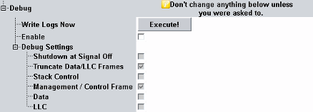

The "Debug" node configures the log file generation and selects which message types are replicated for analysis with R&S CMWmars.
Do not enable the debug mode during regular operation. It impacts the test performance, timing, hard disk usage, and so on. |

The settings are not affected by a reset or preset. They are not stored in save files. A reboot restores the default settings.
Writes the WLAN log files to the system drive.
Enables the configuration of the "Debug Settings".
Selects the types of control messages to be logged.
For enabled "Shutdown at Signal Off", the signaling unit shuts down after the signal is switched off. All selected logs are stored. It minimizes the performance impact during end-to-end data connections.
For enabled "Truncate Data/LLC Frames", MAC data and LLC data frames logged with the payload truncated include only the protocol headers (e.g. IP/UDP/DHCP)
The settings affect log files and message monitoring with R&S CMWmars.